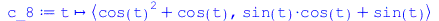

| `(cos(t), sin(t)) end proc], [proc (t) options operator, arrow, function_assign; `<,>`(cos(t), sin(t)) end proc]..." align="center" border="0"> |
| `(cos(t), sin(`+`(`*`(2, `*`(t))))) end proc], [proc (t) options operator, arrow, function_assign; `<,>`(cos(t),..." align="center" border="0"> |
| `(cos(`+`(`*`(2, `*`(t)))), sin(t)) end proc], [proc (t) options operator, arrow, function_assign; `<,>`(cos(`+`..." align="center" border="0"> |
![Typesetting:-mprintslash([c_4 := proc (t) options operator, arrow, function_assign; `<,>`(`+`(`*`(`^`(t, 2)), `-`(1)), t(`+`(`*`(`^`(t, 2)), `-`(1)))) end proc], [proc (t) options operator, arrow, fun...](images/3_Länge_14.gif) |
![Typesetting:-mprintslash([c_5 := proc (t) options operator, arrow, function_assign; `<,>`(cos(`*`(`^`(t, 2))), `*`(t, `*`(sin(t)))) end proc], [proc (t) options operator, arrow, function_assign; `<,>`...](images/3_Länge_15.gif) |
![Typesetting:-mprintslash([c_6 := proc (t) options operator, arrow, function_assign; `<,>`(`*`(`^`(t, 2)), `*`(`^`(t, 3))) end proc], [proc (t) options operator, arrow, function_assign; `<,>`(`*`(`^`(t...](images/3_Länge_16.gif) |
![Typesetting:-mprintslash([c_7 := proc (t) options operator, arrow, function_assign; `<,>`(`+`(tan(t), `-`(1)), t(`+`(`*`(`^`(t, 3)), `-`(1)))) end proc], [proc (t) options operator, arrow, function_as...](images/3_Länge_17.gif) |
| `(`+`(`*`(`^`(cos(t), 2)), cos(t)), `+`(`*`(sin(t), `*`(cos(t))), sin(t))) end proc], [proc (t) options operator..." align="center" border="0"> |
![Typesetting:-mprintslash([c_9 := proc (t) options operator, arrow, function_assign; `<,>`(`+`(cos(t), `*`(`^`(sin(t), 2))), `+`(sin(t), `-`(`*`(`^`(cos(t), 3))))) end proc], [proc (t) options operator...](images/3_Länge_19.gif) |
(1) |